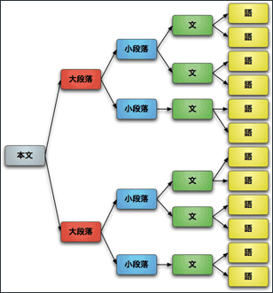
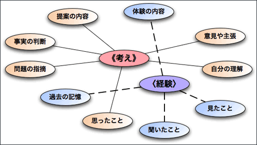

作文のポイント
作文とは？ ／作文で重要なこと ／作文の表現の３つのポイント
作文とは 何謂作文
作文とは、経験や体験に基づいた自分の意見や考えを書くことをいう。
作文就是以自己的經驗及體驗作為基礎並加入自己的意見及想法寫出的東西。
作文は、自分の考えを読む人に伝える方法のひとつである。ただ自分のことを文章に書けばいいというものではなく、そこに自分の考えがはっきりと表わされていなければならない。
作文是將自己的想法讓看的人能夠了解的其中一種方法。並不是只要將自己的想法寫成文章就好，而是在那之中能夠確實的表現及傳達自己的想法。
したがって、できごとを時間の順に並べて書くだけでは、作文とはいえない。
所以只是將發生的事情依發生的時間做排序寫出的東西，並不能夠稱為作文。
××悪い例（できごとを並べただけ）：不好的例子(只是將發生的事情做好排序)
ある日携帯電話が勢いよく鳴りました。日本に住んでいる友人からの電話でした。私に会うために、苗栗まで来るそうです。私は、竹南駅に友人を迎えにいきました。我家牛排で、二人一緒に食事をしました。友人も私も、もうお腹がいっぱい♥です。
⇒ 内容がないよぉ……
作文で重要なこと 寫作文的重點
作文で重要なことは、次の３つである。
寫作文的重點，為以下的三項。
自分の考えを「まとめる」 將自己的想法「彙整」
『自分の考えを「まとめる」』には、《何を書く？》か考えなければならない。
『要將自己的想法「彙整」前』，必須先想《要寫什麼？》。
たとえば、次のように考えてみるといいだろう。
例如說，
- どんな経験や体験について書くのか考える
要先想好想將哪種經驗或體驗寫出來
- 引っ越し／夏休みの旅行／今朝の二日酔い／彼女との失恋……など
搬家/暑假去旅行/早上起來宿醉/失戀˙˙˙˙˙˙˙˙˙˙˙˙˙˙等等
- それが自分にとってどんな種類の経験や体験だったのか考える
之後在想這對自己來說是哪種種類的經驗或體驗
- うれしいこと／楽しいこと／むなしいこと／つらいこと／苦しいこと……など
高興的事情/快樂的事情/無奈的事情/辛苦的事情/痛苦的事情˙˙˙˙等等
- その経験や体験に対してどのように感じたり考えたのかまとめる
最後將自己對這些經驗及體驗有什麼樣的感覺或想法做個彙整
- 興味を持った／共感した／理解できなかった／いろいろ悩んだ……など
抱持著興趣/感到有同感/無法理解/煩惱著很多事情˙˙˙˙˙˙˙˙等等
考えを言葉で「表現する」 將想法用語言「表現出來」
『考えを言葉で「表現する」』には、《どう書く？》か考えなければならない。
如果要『將想法用語言「表現出來」』必須先想《該如何寫？》
次の６つの点を考えてみるといいだろう。
就以以下6點作為出發點吧。
- 題名はどうする？……… [⇒ 題名について]
名稱怎麼辦？˙˙˙˙˙﹝⇒關於作文名稱﹞
- 構成はどうする？……… [⇒ 構成について]
如何做構成？˙˙˙˙˙﹝⇒關於內容的結構﹞
- 展開はどうする？……… [⇒ 展開について]
如何展開？˙˙˙˙˙˙﹝⇒關於內容的開始﹞
- 文末はどうする？……… [⇒ 文末について]
結尾該怎麼辦？˙˙˙˙﹝⇒結尾怎麼寫﹞
- 語彙はどうする？……… [⇒ 語彙について]
語彙怎麼辦？˙˙˙˙˙﹝⇒關於語彙﹞
- 形式はどうする？……… [⇒ 形式について]
要以什麼形式？˙˙˙˙﹝⇒關於寫作文的形式﹞
題名について 關於作文名稱
題名は、本文の内容にあわせなければならない。題名から、本文の内容がまったく想像できないものはよくない。
作文標題必須和本文的內容有所關聯。如果作文的標題與本文的內容超出預料的情況則不好。
××悪い例：不好的例子
「ローマ帝国の建国と崩壊」
私は、高校のときに日本語の勉強を始め、育達商業技術學院に進学しました。私が日本語の勉強を始めた理由は、アニメやマンガに興味があったからです。将来、日本語が上達したら、日本で声優を目指したいと思います。
⇒ まったく関係ありません……
また、題名は意味がはっきりわかるものにする。何をあらわしているのかよくわからない題名はよくない（××悪い例：「わが育達の青い血」→ "blue blood"には貴族という意味がありますが……？？）。
另外作文的標題要以能夠清楚了解內容為主。無法理解意思的名稱是不好的(××不好的例子：「我們育達的藍血」→"blue blood"這單字有貴族階級的意思˙˙˙˙˙˙？？)
題名を文の形にするのはよくない。名詞で終わるようにするのが普通である。
將作文標題寫成文的方式是不好的。普遍都是以名詞做結束。
×悪い例：「私はビル・ゲイツが嫌いです。」（文の形）
◎良い例：「私の嫌いなビル・ゲイツ」（名詞で終わる）
題名は、適当な長さにする。
作文標題應該要取適當的長度
×悪い例：「僕が今年の７月16日に四国の鳴門海峡に行ったときの思い出などについて」（長すぎます…）
◎良い例：「鳴門旅行の思い出」（これで十分）
構成について 關於作文的構成
まず、本文は「段落」にわける。
首先本文要分出「段落」。

大段落の内容は、《考え》と〈経験〉に区別できる。
大段落的內容可分為《想法》及《經驗》。

大段落の構成のパターン 大段落架構的模式
大段落の構成にはパターン（型）がある。
大段落的架構有模式(形式)。
大段落の構成のパターン（型）は、大きく次の３つに分けられる。
大段落的架構模式(形式)可以大致分為以下3種。
- 二段構成
→二段架構
- 三段構成
→三段架構
- 四段構成
→四段架構
二段構成 二段架構
二段構成のパターン 二段架構的模式
〔まえ〕→〔あと〕 ﹝前﹞→﹝後﹞
二段構成の例 二段架構的例子
まえ
前 | タイムマシーンは永遠に発明されないだろう。
時光機永遠不會被發明吧。 | 主張
主張 | 《考え》
《想法》 |
あと
後 | 未来の人には誰ともあったことがないからだ。
因為並沒有與任何未來的人見過面。 | 証拠
證據 | 〈経験〉
《經驗》 |
まえ
前 | 牛排貴族で鉄板は嫌だといっている米国人がいました。
在貴族世家有一個美國人說吃牛排不要用鐵板。 | 具体例
具體例子 | 〈経験〉
《經驗》 |
あと
後 | 毎日、ハンバーガーでも食べていればいいと思います。
認為只要每天都吃著漢堡就可以了。 | 意見（結論）
意見(結論) | 《考え》
《想法》 |
三段構成 三段架構
三段構成のパターン 三段架構的模式
〔はじめ〕→〔なか〕→〔おわり〕 ﹝開始﹞→﹝中間﹞→﹝結束﹞
三段構成の例 三段架構的例子
はじめ
開始 | 形があるものは、必ずいつかは壊れるのです。
有形狀的東西，一定有壞掉的一天。 | 主張
主張 | 《考え》
《想法》 |
なか
中間 | クーラーもバイクもプレステ２も壊れました。
冷氣及摩扥車與PS2都壞掉了。 | 証拠
證據 | 〈経験〉
〈經驗〉 |
おわり
結束 | 形があるもので壊れないものなどありません。
沒有ㄧ種有形狀的東西是不會壞掉的。 | 判断（結論）
判斷(結論) | 《考え》
《想法》 |
はじめ
開始 | アメリカ人とはどのような人たちでしょうか？
美國人是怎麼樣的人們呢？ | 問題（提示）
問題(提示) | 《考え》
《想法》 |
なか
中間 | マークは日本そばにカレーをかけて食べます。
ブライアンはいつもビール瓶を握っています。
馬克會在日式炒麵上淋上咖哩在吃。
布萊恩總是將啤酒瓶拿在手上。 | 具体例
具體例子 | 〈経験〉
〈經驗〉 |
おわり
結束 | アメリカ人は全員とても個性的だと思います。
我認為所有的美國人都很有個性。 | 判断（結論）
判斷(結論) | 《考え》
《想法》 |
はじめ
開始 | ローマ、ペルシャ、オスマントルコ、日本。
どんな強大な帝国も、いつかは崩壊します。
羅馬、伊郎、鄂圖曼土耳其、日本。
不管是多麼強大的帝國，總有一天會崩陷的。 | 事実
事實 | 〈経験〉
〈經驗〉 |
なか
中間 | 先生は、米国が現代の帝国だといいました。
老師說美國是現代的帝國。 | 伝聞
傳說 | 〈経験〉
〈經驗〉 |
おわり
結束 | 米国も、近い将来崩壊するのだと思います。
我想美國在不久的將來也會崩陷的。 | 判断（結論）
判斷(結論) | 《考え》
《想法》 |
四段構成 四段架構
四段構成のパターン 四段架構的模式
〔起〕→〔承〕→〔転〕→〔結〕
﹝起﹞→﹝承﹞→﹝轉﹞→﹝合﹞
四段構成の例 四段架構的例子
起
起 | 暖かな春の日、私たちに一人の子供ができました。
在溫暖的春天我們有一個孩子了。 | 具体例１
具體例1 | 〈経験〉
〈經驗〉 |
承
承 | そして、寒い冬が来る前に死んでしまったのです。
然後在寒冷的冬天來臨前死亡了。 | 具体例２
具體例2 | 〈経験〉
〈經驗〉 |
転
轉 | 輝く星空も朝日に消え、桜は散って空を舞います。
閃耀的星空也消失於早晨的陽光，櫻花掉落在空中飛舞。 | 視点の転換
視點的轉換 | 《考え》
《想法》 |
結
合 | はかないからこそ美しいと、私は思いたいのです。
因為無法預測所以美麗，我是這麼想的。 | 意見（結論）
意見(結論) | 《考え》
《想法》 |
展開について 關於展開
文や段落の前後のつながりには、論理的な筋道がある。
文或段落前後的連接，有個理論性的道理。
たとえば、次のようになる。
例如會像以下的樣子。
文や段落の前後のつながり 文或段落前後的連接
| 前 | 約束は必ず守らなければいけません。
答應人的事情務必得要遵守才可以。 | 主張
主張 |
| 後 | 信頼こそが、社会の基本だからです。
互相信賴才是這社會的基本。 | 理由
理由 |
| 前 | リンゴの実が自然に枝から落ちました。
蘋果的果實很自然的樹枝上吊落了。 | 記述
敘述 |
| 後 | 万物には「引力」が働いているのです。
萬物都有「引力」在作用著。 | 説明
說明 |
| 前 | 正義の戦争というのはあるのでしょうか？
有戰爭是正義的嗎？ | 提示
提示 |
| 後 | 私は最悪の平和も戦争に勝ると思います。
我認為最糟糕的和平也勝過於戰爭。 | 意見
意見 |
| 前 | 首相は靖国に参拝すべきではありません。
首相不應該前往靖國做參拜的。 | 判断
判斷 |
| 後 | 政教分離の原則に反するものだからです。
因為是有違政教分離原則的關係。 | 根拠
根據 |
| 前 | 大統領は「テロとの戦いが必要だという。
總統說「與恐怖活動作戰是必要的。 | 引用
引用 |
| 後 | しかし、テロとは手段であって実体はない。
但是恐怖活動是種手段並不是實體。 | 批判
批判 |
| 前 | 日本の選挙制度には不十分な点が多い。
日本的選舉制度上有著太多不完善的地方。 | 指摘
指出 |
| 後 | まず、小選挙区制度を廃止するべきだ。
首先應該先把小選舉區制度廢止。 | 提案
提案 |
文末について 關於文章結尾
文末の表現形式を統一する。
將文章結尾的表現方式作統一。
- だ・である調
-
- 私は先生だ。
- 日本から来た。
- 東京は大都市である。
- です・ます調
-
- 私は先生です。
- 日本から来ました。
- 東京は大都市です。
だ・である調と、です・ます調とを混ぜて使ってはいけない。
不可將だ・である調及です・ます調混合著使用。
また、文末に「ネサヨ」などを使うのもよくない。
又或者在文章結尾使用「ネサヨ」等的也不好。
- × 考え方を変えなければ、問題は解決できないね。
- × みんなで笑えば世界はもっと平和になるはずさ。
- × 日本語の勉強を始めてから、もう３年になるよ。
- × 少しのことで悩んでばかりでは坊やのままだぜ。
文末におかしなことばを使ってもいけない。
在文章結尾也不可使用奇怪的句子。
- × コロッケがたべたいなり。
- × あなたのことが好きざます。
- × むだな話はあとにしてほしいにゃ。
- × 今日も仕事が忙しいでござる。
語彙について 關於語彙
まず、話しことばの語と、書きことばの語との違いに気をつける。
首先要先注意說話時的語法及書寫時的差別。
-
- ×：とっても おいしい んで、いっぱい 食べた。
- ◎：とても おいしい ので、たくさん 食べた。
-
- ×：ちょっと 髪が少ない よ。
- ◎：少しだけ 髪が少ない と思う。
俗語や卑語もできるだけ使わないようにする（乱暴なことばや汚いことば、流行りことばは使わない）。
不應該使用時下使用的及較粗俗的字體(充滿暴力的語言或髒話、流行用等是不該使用的)。
-
- ×：アキラ って、マジ かっけー。
- ◎：山口先生 は、とても 男前 だ。
-
- ×：あいつ と 昼メシ を 喰って きた。
- ◎：あの人 と 昼ごはん を 食べて きた。
-
- ×：ブッシュの 野郎 は イカれた アメ公 だぜ。
- ◎：ブッシュ氏 は 非常に個性的な アメリカ人 です。
形式について 關於形式
作文には一定の形式がある。
寫作文有一定的形式。
- たて書きにするのか、よこ書きにするのか？
該寫直書或者是橫書？
→ 「、」「。」の位置やカギカッコの向きなどに注意する
→要注意「、」「。」的位置及框框的方向等
- 手で書くのか、パソコンを使うのか？
該用手寫或是用電腦？
→ 手で書くときにはていねいに書くこと
→用手寫時必須寫的端正
- 字数の制限があるのか、ないのか？
有字數的限制或沒有
→ 『〜字以内』＝90〜100％、『〜字程度』＝90〜110％
→『~字以內』=90~100%、『~字的程度』=90~110%
それが他の人に「伝わる」 能夠將他「傳達」給其他的人
作文に書いたことが『他の人に「伝わる」』ということは、《なぜ書く？》かということと関係がある。
將寫成作文的東西能夠『將他「傳達」給其他的人』與《為何要寫？》有著關聯。
たとえば、「お願いの手紙」について、考えてみよう。
例如關於「有事情要拜託人時的信件」。
なぜ「お願いの手紙」を書くのかといえば、『何かお願い』があるからである。そのときに大事なことは、「『お願い』があること」を相手に伝えることである。
為何要寫「有事情要拜託人時的信件」，那是因為有事情需要『拜託』別人來幫忙。所以寫的時候要注意的是「有事情需要『拜託』」這件事一定要傳達給對方。
作文も同じである。
寫作文也是相同的。
なぜ「作文」を書くのかといえば、『何か言いたいこと』があるからである。そのときに大事なことは、「『言いたいこと』があること」を相手に伝えることである。
說起為什麼要寫作文，是因為有什麼事情想要說出來。所以重要的是把自己心中有想說的事情傳達給對方知道。
作文は自分の考えを他の人に伝える方法のひとつである。あなたが他の人に伝えないことは何だろうか？
作文是將自己想法傳達給其他人的一種方法。你所沒辦法傳達給人的是什麼呢？
作文の表現の３つのポイント 作文表現方式的3個要點
作文を書くときには、次の３つが大切である。
要寫作文時以下3點很重要。
- 必要な情報を
將必要的情報
- よく整理して
良好的整理
- 順序よく書く
照邏輯順序表達
必要な情報 必要的情報
読む人が『知りたい』と思うことが、必要な情報である。
能讓讀的人有「想繼續知道」的想法，就是必要的情報。
たとえば、
例如、
《わかりにくい書き方の例》
《不容易讓人了解的例子》
先生の
授業休ませてください。
老師這堂課請讓我休息吧。
という手紙やメールを受けとったら、「これは誰からのものだろう？」、「どの授業だろう？」、「授業を休む理由は何だろう？」など、いろいろなことが知りたくなるだろう。つまり、これらの《書いた人の名前》、《授業の名前》、《欠席の理由》は、すべて『必要な情報』なのである。
假使老師收到了 〈老師這堂課請讓我休息吧。〉 的信件或者電郵，便會想「這是誰寄過來的？」、「是哪堂課阿？」、「要請假的理由是什麼？」等等，會想要去多知道些事情。也就是《寫信的人名》、《課程名稱》、《請假理由》這些都是『必要的情報』。
作文を書くときにも、何が必要な情報なのか良く考えて書くようにしよう。
所以在寫作文時，就要先想好什麼是必要的情報在開始寫。
よく整理する 良好的整理
よく整理するということは、
所謂良好的整理就是、
- 互いに関係のある情報をまとめる
將相關的情報彙整
- 本題に関係のない情報を取り除く
將與主題無關的情報剔除
ことである。
たとえば、図書館に次のような貼紙があったら、とてもわかりにくいだろう。
例如、假如圖書館有下列的海報，那會使人很難了解吧。
《わかりにくい書き方の例》
《不容易讓人了解的例子》
図書館の利用方法
- 図書は一人５冊まで借りられます。
- 図書館の中で食べ物を食べたり飲み物を飲んだりしてはいけません。
- 図書館の中では走らないでください。あぶないです。
- 図書の貸し出し期間は２週間です。
- トイレの水は飲めません。
- 図書の貸し出しには、学生証か図書館カードが必要です。
- 館内は全面禁煙です。
この貼紙には、７つの項目が書かれている。しかし、〔図書の貸し出しに関する情報〕と〔図書館利用のルールに関する情報〕とがはっきり区別されていない。また、図書館の利用方法としては、特に必要のない情報も含まれている。そのため、とてもわかりにくくなっていると考えられる。
這張海報上有寫7個項目。但是﹝有關在圖書館內租借的情報﹞與﹝圖書館內的使用規則﹞並沒有劃分的很清楚。另外在圖書館的利用方法中，也看到了沒必要的情報。所以會使人看的不是很清楚。
この貼紙の項目を、内容によって分けてみると、次のようになるだろう。
假如將這張海報的各個項目，依內容做出區別則會像以下的樣子。
- 図書の貸し出しについてのもの
-
- 図書は一人５冊まで借りられます。
- 図書の貸し出し期間は２週間です。
- 図書の貸し出しには、学生証か図書館カードが必要です。
- 利用のルールについてのもの
-
- 図書館の中で食べ物を食べたり飲み物を飲んだりしてはいけません。
- 館内は全面禁煙です。
- 特に必要がないと思うもの
-
- 図書館の中では走らないでください。あぶないです。（⇒常識だから特に必要ないだろう）
- トイレの水は飲めません。（⇒もともと飲む人は少ないだろう）
このように内容を整理してみると、貼紙は次のように書き直すことができる。
像這樣整理過後，海報可以重寫成以下這樣。
図書館の利用方法
図書の貸し出しについて
- 図書は一人５冊まで借りられます。
- 図書の貸し出し期間は２週間です。
- 図書の貸し出しには、学生証か図書館カードが必要です。
利用のルール
- 図書館の中で食べ物を食べたり飲み物を飲んだりしてはいけません。
- 館内は全面禁煙です。
また、さらに不要な語句を削ったり、簡潔な表現に変えたりして、たとえば次のように書くこともできる。
另外再把不需要的語句刪掉，將用詞改簡潔，就像以下這樣。
図書の貸し出しについて
- 貸し出は一人５冊まで、期間は２週間です。
- 貸し出しには、学生証か図書館カードが必要です。
図書館利用のルール
- 館内は飲食禁止です。
- 館内は全面禁煙です。
みんなの図書館です。マナーを守って利用しましょう。
作文を書くときにも、内容を良く整理して書くようにしよう。
寫作文時也要將內容好好整理過後再寫。
順序よく 按邏輯順序
相手が必要とする情報を、自分なりに整理して示しても、それだけで十分というわけではない。情報が適切な順序で示されなければ、とてもわかりにくいものになってしまうからである。
並不是將對方所需要的情報以自己的方式編排表現出就可以了。如果情報並不是適當有邏輯的按順序表現出的話，會變的非常難讓人理解。
たとえば、次のような説明書はとても不親切で、わかりにくいものである。
就像是以下的說明書，內容讓人看了感受不到親切感且難以理解。
《わかりにくい書き方の例》
《不容易讓人了解的例子》
コピーの操作
「プリント」ボタンを押すと印刷が始まります。印刷する用紙のサイズは「用紙」ボタンで選択します。「プリント」ボタンが緑色に点灯していれば印刷可能です。
ファックスの操作
「スタート」ボタンを押すとファックスを送信します。「スタート」ボタンが緑色に点灯していれば送信可能です。原稿は、文字の面を上にしてセットしてください。
ここには操作をするときに必要な情報は含まれているし、項目ごとに整理もされている。しかし、この説明書はわかりやすいものとはいえない。それは、実際に操作するときの順番と、説明の順番とが一致していないからである。そのため、とても不親切で、わかりにくいものと感じられるのである。
雖然這份說明書有包含操作時所需要的情報及依項目做好了整理，但是也並不能讓人容易理解。因為實際操作時的順序與說明的順序並沒有一致。所以會讓人有種不親切感而不容易理解。
- コピー
- 実際の操作：
- 印刷可能→用紙サイズ選択→印刷
- 説明の順番：
- 印刷→用紙サイズ選択→印刷可能
- ファックス
- 実際の操作：
- 送信可能→原稿セット→送信
- 説明の順番：
- 送信→送信可能→原稿セット
したがって、たとえば次のように書けば、上の説明書よりもずっと親切なものになるだろう。
所以假如像以下的方式寫，會比上面的說明書還讓人感到親切吧。
コピーの操作
- 「プリント」ボタンが緑色に点灯していれば印刷可能です。
- 印刷する用紙のサイズを「用紙」ボタンで選択してください。
- 「プリント」ボタンを押すと印刷が始まります。
ファックスの操作
- 「スタート」ボタンが緑色に点灯していれば送信可能です。
- 原稿の文字の面を上にしてセットしてください。
- 「スタート」ボタンを押すとファックスを送信します。
作文を書くときにも、文や段落の順序を良く考えて書くようにしよう。
要寫作文時，也需將文章及段落的順序好好想清楚在寫。
参考文献：野田尚史・森口稔（2003）『日本語を書くトレーニング』ひつじ書房.